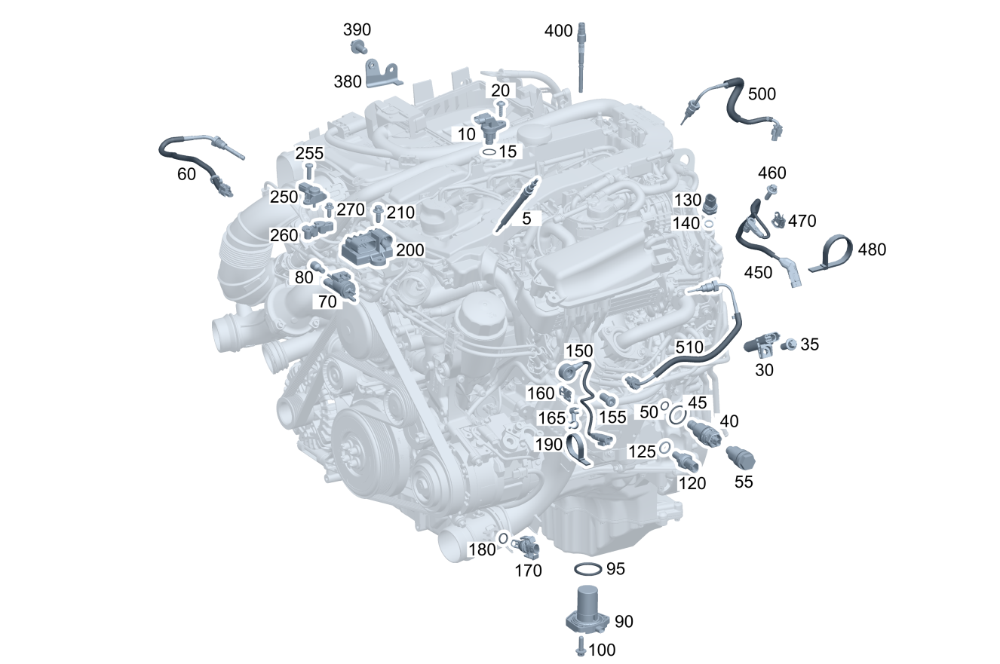

| № | Артикул | Название | Кол. | Примечание |
|---|---|---|---|---|
| 5 | A 001 159 66 01 | Свеча накаливания (GLUEHKERZE) | 4 | |
| 5 | A 001 159 73 01 | Свеча накаливания (GLUEHSTIFTKERZE) | 4 | |
| 5 | A 001 159 80 01 | Свеча накаливания (GLUEHSTIFTKERZE) | 4 | |
| 10 | A 651 905 01 00 | Датчик положения (POSITIONSSENSOR) | 1 | Датчик положения распределительного вала |
| 15 | A 019 997 13 45 | - Кольцевая прокладка (O-RING) | 1 | |
| 20 | A 005 990 57 12 | Винт с плоской головкой (FLACHKOPFSCHR.) | 1 | Датчик положения распределительного вала к крышке клапанного механизма |
| 30 | A 003 153 28 28 | Датчик положения (POSITIONSSENSOR) | 1 | Коленвал |
| 30 | A 276 153 01 28 | Датчик положения | 1 | Коленвал |
| 30 | A 276 905 07 00 | Датчик положения (POSITIONSSENSOR) | 1 | Коленвал |
| 30 | A 276 905 12 00 | Датчик положения (POSITIONSSENSOR) | 1 | Коленвал |
| 30 | A 276 905 15 00 | Датчик положения (POSITIONSSENSOR) | 1 | Коленвал |
| 35 | N 910142 006001 | Винт с 6-гр. глвк (SECHSRUNDSCHRAUBE) | 1 | Датчик положения к блоку цилиндров; M6X16 |
| 40 | A 651 180 03 15 | DIRECTIONAL CTRL. VALVE (HYDRAULIK-WEGEVENTIL) | 1 | Клапан к блоку цилиндров |
| 45 | A 021 997 48 45 | - Кольцевая прокладка (O-RING) | 1 | 26X2.5 |
| 50 | A 021 997 49 45 | - Кольцевая прокладка (O-RING) | 1 | 11.3X1.95 |
| 60 | A 008 153 22 28 | Датчик температуры (TEMPERATURSENSOR) | 1 | Температура ОГ перед турбокомпрессором |
| 60 | A 000 905 64 04 | Датчик температуры (TEMPERATURSENSOR) | 1 | Температура ОГ перед турбокомпрессором |
| 60 | A 000 905 38 01 | Датчик температуры (TEMPERATURSENSOR) | 1 | Датчик температуры перед охладителем наддувочного воздуха |
| 60 | A 000 905 83 05 | Датчик температуры (TEMPERATURSENSOR) | 1 | Датчик температуры перед охладителем наддувочного воздуха |
| 60 | A 000 905 93 05 | Датчик температуры (TEMPERATURSENSOR) | 1 | Датчик температуры перед охладителем наддувочного воздуха |
| 70 | A 002 540 70 97 | Переключающий клапан (UMSCHALTVENTIL) | 1 | Управление перепускным клапаном компрессора |
| 70 | A 000 500 32 01 | Переключающий клапан (UMSCHALTVENTIL) | 1 | Управление перепускным клапаном компрессора |
| 70 | A 002 540 70 97 | Переключающий клапан (UMSCHALTVENTIL) | 1 | Теплообменник ОГ |
| 70 | A 000 500 32 01 | Переключающий клапан (UMSCHALTVENTIL) | 1 | Теплообменник ОГ |
| 70 | A 002 540 14 97 | Переключающий клапан (UMSCHALTVENTIL) | 1 | Насос омывателя |
| 70 | A 002 540 70 97 | Переключающий клапан (UMSCHALTVENTIL) | 1 | Насос омывателя |
| 70 | A 000 500 32 01 | Переключающий клапан (UMSCHALTVENTIL) | 1 | Насос омывателя |
| 80 | A 117 078 09 81 | Сетчатый фильтр (SIEBEINSATZ) | 1 | Управление перепускным клапаном компрессора |
| 80 | A 117 078 09 81 | Сетчатый фильтр (SIEBEINSATZ) | 1 | Теплообменник ОГ |
| 80 | A 117 078 09 81 | Сетчатый фильтр (SIEBEINSATZ) | 1 | Насос омывателя |
| 90 | A 001 153 13 32 | Выключатель уровня (FUELLSTANDSCHALTER) | 1 | Датчик\-выключатель уровня масла |
| 95 | A 001 997 72 41 | - Уплотнительное кольцо (DICHTRING) | 1 | |
| 95 | A 027 997 95 45 | - Кольцевая прокладка (O-RING) | 1 | |
| 100 | N 910143 006001 | Винт с 6-гр. глвк (SECHSRUNDSCHRAUBE) | 3 | Датчик\-выключатель уровня масла к масляному поддону; M6X16 |
| 120 | A 005 153 23 28 | Датчик температуры (TEMPERATURSENSOR) | 1 | К масляному поддону, резьбовое соединение |
| 125 | A 000 271 11 60 | Уплотнительное кольцо (DICHTRING) | 1 | К масляному поддону; 14X18 |
| 130 | A 009 153 51 28 | Датчик давления (DRUCKMESSUMFORMER) | 1 | В системе рециркуляции ОГ, с резьбовым креплением |
| 130 | A 009 153 51 28 | Датчик давления (DRUCKMESSUMFORMER) | 1 | В системе рециркуляции ОГ, с резьбовым креплением |
| 130 | A 009 153 52 28 | Датчик давления (DRUCKMESSUMFORMER) | 1 | В системе рециркуляции ОГ, с резьбовым креплением |
| 130 | A 009 153 52 28 | Датчик давления (DRUCKMESSUMFORMER) | 1 | В системе рециркуляции ОГ, с резьбовым креплением |
| 130 | A 009 153 52 28 | Датчик давления (DRUCKMESSUMFORMER) | 1 | В системе рециркуляции ОГ, с резьбовым креплением |
| 130 | A 009 153 52 28 | Датчик давления (DRUCKMESSUMFORMER) | 1 | В системе рециркуляции ОГ, с резьбовым креплением |
| 130 | A 000 905 27 06 | Датчик давления (DRUCKSENSOR) | 1 | В системе рециркуляции ОГ, с резьбовым креплением |
| 130 | A 009 153 52 28 | Датчик давления (DRUCKMESSUMFORMER) | 1 | В системе рециркуляции ОГ, с резьбовым креплением |
| 140 | N 007603 012100 | Уплотнительное кольцо (DICHTRING) | 1 | 12X16\-AL |
| 150 | A 007 153 12 28 | Датчик детонации (KLOPFSENSOR) | 1 | Цилиндр 1 и 2 |
| 150 | A 007 153 12 28 | Датчик детонации (KLOPFSENSOR) | 1 | Цилиндры 3 и 4 |
| 155 | A 009 990 65 04 | Винт Torx с цил. головкой (ZYLINDERSCHRAUBE MIT ISR) | 1 | Крепление датчика детонации цилиндра 1 и 2 |
| 155 | A 009 990 65 04 | Винт Torx с цил. головкой (ZYLINDERSCHRAUBE MIT ISR) | 1 | Крепление датчика детонационного сгорания цилиндра 3 и 4 |
| 160 | A 001 991 70 70 | Крепежная скоба (BEFESTIGUNGSKLAMMER) | 1 | Датчик детонации цилиндра 1 и 2 |
| 160 | A 000 991 12 95 | Фиксатор вставной (EINSTECKBEFESTIGER) | 1 | Датчик детонации цилиндра 1 и 2; 6.5\-7 MM |
| 165 | A 611 995 03 65 | Держатель шланга (SCHLAUCHHALTER) | 1 | Датчик детонации цилиндров 3 и 4 |
| 170 | A 651 153 00 28 | Датчик температуры (TEMPERATURSENSOR) | 1 | Зафиксирован в наддувочном воздуховоде |
| 180 | A 601 997 04 48 | - Уплотнительное кольцо (DICHTRING) | 1 | 11X2 |
| 190 | A 006 997 35 90 | Кабельная стяжка (KABELBINDER) | 4 | 2.5X100 MM |
| 200 | A 651 900 23 03 | Блок управления (STEUERGERAET) | 1 | Выходной каскад системы накаливания |
| 200 | A 651 900 31 03 | Блок управления (STEUERGERAET) | 1 | Выходной каскад системы накаливания |
| 200 | A 651 900 77 03 | Блок управления (STEUERGERAET) | 1 | Выходной каскад системы накаливания |
| 200 | A 651 900 79 03 | Блок управления (STEUERGERAET) | 1 | Выходной каскад системы накаливания |
| 200 | A 651 900 12 00 | Блок управления (STEUERGERAET) | 1 | Выходной каскад системы накаливания |
| 200 | A 651 900 56 02 | Блок управления (STEUERGERAET) | 1 | Выходной каскад системы накаливания |
| 200 | A 651 900 09 00 | Блок управления | 1 | Выходной каскад системы накаливания |
| 200 | A 651 900 55 02 | Блок управления (STEUERGERAET) | 1 | Выходной каскад системы накаливания |
| 200 | A 651 900 22 03 | Блок управления (STEUERGERAET) | 1 | Выходной каскад системы накаливания |
| 200 | A 651 900 78 03 | Блок управления (STEUERGERAET) | 1 | Выходной каскад системы накаливания |
| 200 | A 651 900 80 03 | Блок управления (STEUERGERAET) | 1 | Выходной каскад системы накаливания |
| 200 | A 651 900 31 03 | Блок управления (STEUERGERAET) | 1 | Выходной каскад системы накаливания |
| 200 | A 651 900 77 03 | Блок управления (STEUERGERAET) | 1 | Выходной каскад системы накаливания |
| 200 | A 651 900 79 03 | Блок управления (STEUERGERAET) | 1 | Выходной каскад системы накаливания |
| 210 | N 910143 006001 | Винт с 6-гр. глвк (SECHSRUNDSCHRAUBE) | 2 | Блок управления к блоку цилиндров; M6X16 |
| 250 | A 010 153 72 28 | Датчик давления (DRUCKSENSOR) | 1 | Измерение давления в компрессоре |
| 255 | N 000000 002179 | Винт с 6-гр. глвк (SECHSRUNDSCHRAUBE) | 2 | Датчик к крепёжной пластине |
| 260 | A 651 153 00 41 | Пластина (PLATTE) | 1 | К проушине для вывешивания |
| 270 | N 910143 006001 | Винт с 6-гр. глвк (SECHSRUNDSCHRAUBE) | 1 | Пластина к проушине для вывешивания; M6X16 |
| 380 | A 651 151 01 40 | Держатель (HALTER) | 1 | Стартер к блоку цилиндров двигателя |
| 380 | A 651 151 05 40 | Держатель (HALTER) | 1 | Стартер к блоку цилиндров двигателя |
| 390 | N 000000 003853 | Винт с 6-гр. глвк (SECHSRUNDSCHRAUBE) | 1 | Стартер к блоку цилиндров двигателя; M8X16 |
| 400 | A 642 905 03 00 | Датчик давления (DRUCKSENSOR) | 4 | BRENNRAUMDRUCKSENSOR |
| 450 | A 001 153 15 32 | Датчик вихревой заслонки (TUMBLEKLAPPENSENSOR) | 1 | Выключатель конечного положения для предпускового подогревателя |
| 450 | A 000 905 50 04 | Датчик положения (POSITIONSSENSOR) | 1 | Выключатель конечного положения для предпускового подогревателя |
| 450 | A 000 905 14 03 | Датчик положения (POSITIONSSENSOR) | 1 | Выключатель конечного положения для предпускового подогревателя |
| 450 | A 651 905 06 00 | Датчик положения (POSITIONSSENSOR) | 1 | Выключатель конечного положения для предпускового подогревателя |
| 460 | N 910143 006001 | Винт с 6-гр. глвк (SECHSRUNDSCHRAUBE) | 1 | Крепление к переключающей заслонке; M6X16 |
| 470 | A 012 988 46 78 | Скоба (KLAMMER) | 1 | 16.4X15 |
| 470 | A 012 988 46 78 | Скоба (KLAMMER) | 1 | 16.4X15 |
| 480 | A 000 995 97 06 | Кабельная стяжка (KABELBINDER) | 1 | 4.6 X 200 MM |
| 510 | A 000 905 16 32 | Датчик температуры (TEMPERATURSENSOR) | 1 | Измерение температуры ОГ в контуре рециркуляции ОГ высокого давления |
| 510 | A 000 905 82 05 | Датчик температуры (TEMPERATURSENSOR) | 1 | Измерение температуры ОГ в контуре рециркуляции ОГ высокого давления |
| 510 | A 000 905 92 05 | Датчик температуры (TEMPERATURSENSOR) | 1 | Измерение температуры ОГ в контуре рециркуляции ОГ высокого давления |
Позиций: 89 · подписано на схемах: 89 · колесо — плавный зум в курсор, перетаскивание — пан, двойной клик — зум, клик по артикулу — скопировать.